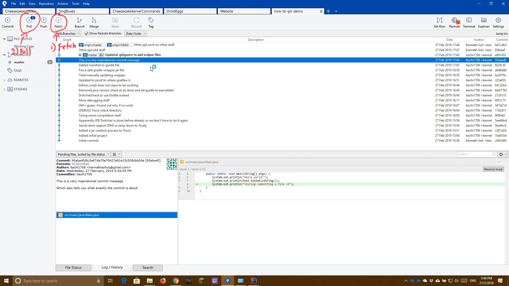
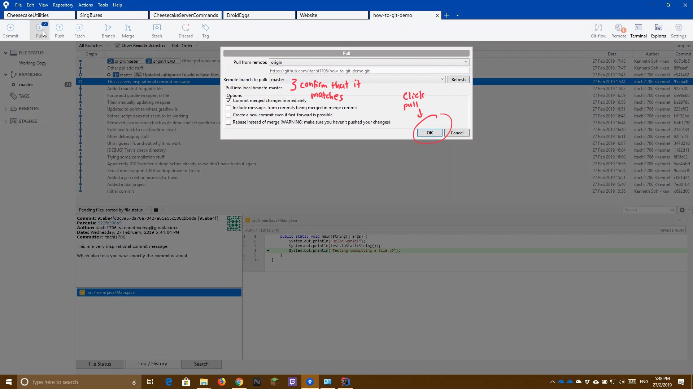

Update Local Project files from GitHub (git pull)
↵ Return to Main Screen
The following guide shows you how to update your local repository with the latest changes from GitHub
- Click the Fetch button to ensure that all changes are fetched
- Ensure that you are at the correct branch you wish to pull changes from
- Click the Pull Button

- Double check that the remote and local branches match
(If it doesnt match, select the correct remote branch with the dropdown box)
- Press OK to confirm and pull new changes

Demo Video
The following is a video on how this is being done. Read the how-to guide before watching the video for actual steps to do it